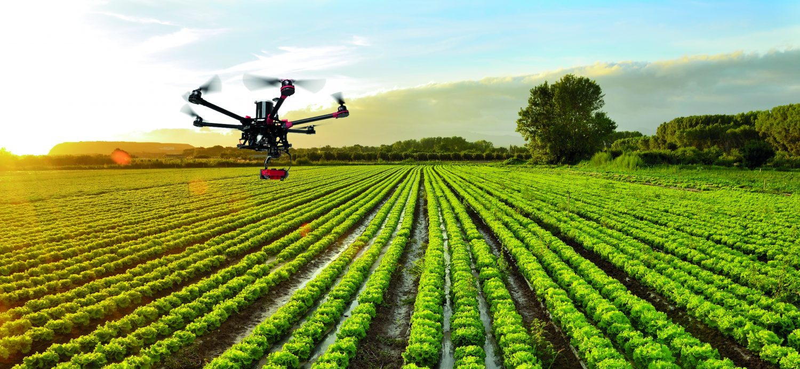
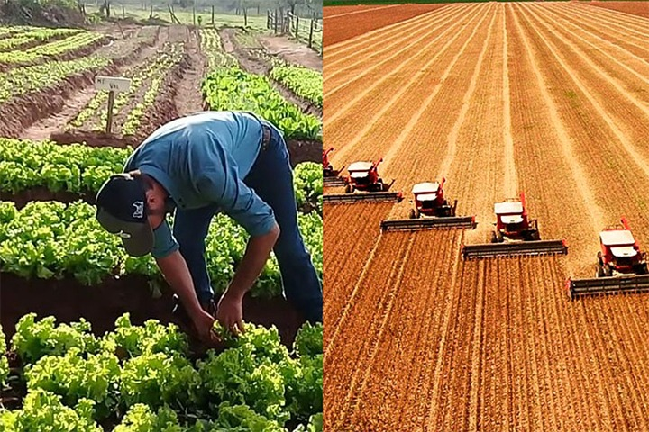

OBJETIVO GENERAL DEL PROYECTO
Determinar el enfoque estratégico-tecnológico para la visión de los agronegocios del Estado de Guanajuato y plan maestro del proyecto Bio-Agroparque Xonotli 4.0.

OBJETIVOS ESPECIFICOS - Primer objetivo
Definir la visión global para el desarrollo de los agronegocios de Valle Bajío centrándose en el papel que juega la tecnología como arnés de solución a retos y riesgos previsibles de la década siguiente. El estudio deberá considerar los efectos del cambio climático: la escasez del agua y escasez alimentaria futura así como cambios en los hábitos del consumidor con mayor conciencia ecológica. Esto obliga a replantear si con apoyo de la tecnología el futuro de la producción de alimentos sustentable y ecológica es la solución para los próximos años en la agro-industria de Guanajuato con el objetivo superior de generar prosperidad inclusiva.
OBJETIVOS ESPECIFICOS - Segundo objetivo
Definir el rol estratégico que debe asumir el predio Xonotli propiedad del Gobierno del Estado, como componente clave para materializar la visión global para el desarrollo de los agro-negocios en Valle Bajío. Esto deberá permitirnos desarrollar el proyecto del Bio-Agroparque Xonotli 4.0, como un exitoso modelo de negocio generador de los ingresos para la realización de la infraestructura básica detonadora de la Mentefactura; generador de investigación, capacitación tecnológica y asesoramiento en implementación.